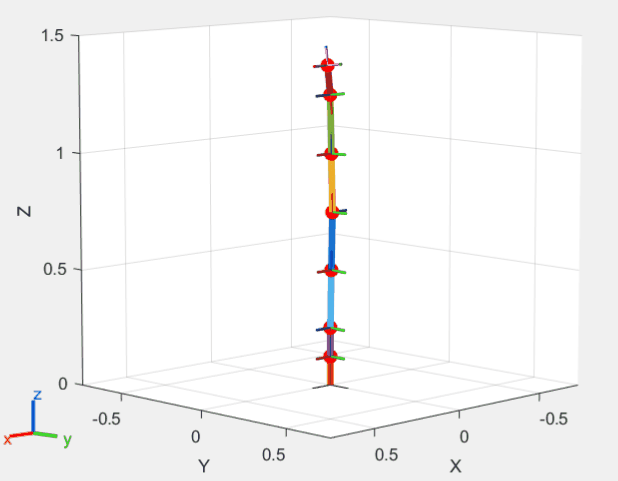
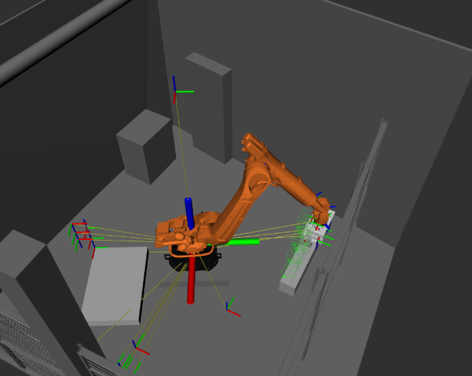
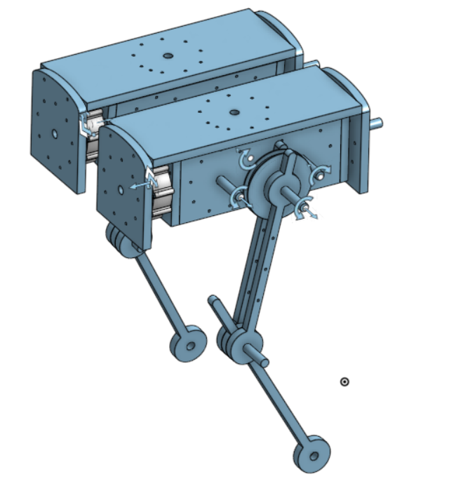

Virtual dynamics Eigenmanifold control
A two-layer architecture for controlling nonlinear
normal modes of underactuated mechanical systems
Through the use of Eigenmanifold theory, it is possible to obtain unforced stable periodic trajectories of multibody nonlinear mechanical systems. Using these to design point-to-point trajectories, we can achieve control efforts near zero, greatly reducing energy expenditure.
This is especially interesting for robotic manipulators and locomotion, as they are often tasked with performing single trajectories many times.
During my literature research, I was looking into the possibility of using nonlinear normal modes for continuum soft manipulators. However, while there is a lot of work available, no work had so far been performed on underactuated systems. I decided to tackle this in my thesis.
To make this work, I rephrase the Eigenmanifold control problem to a trjectory tracking problem, preserving desired behaviour while allowing for the use of state-of-the-art trajectory tracking control methods. This essentially synthesizes two different fields to achieve further reaching results.
This project has taught me a lot related to soft robotic modelling and control, nonlinear control (and proving stability for nonlinear control) and differential geometry.
My thesis is near finished, and I am planning my graduation around July 2025!
This is especially interesting for robotic manipulators and locomotion, as they are often tasked with performing single trajectories many times.
During my literature research, I was looking into the possibility of using nonlinear normal modes for continuum soft manipulators. However, while there is a lot of work available, no work had so far been performed on underactuated systems. I decided to tackle this in my thesis.
To make this work, I rephrase the Eigenmanifold control problem to a trjectory tracking problem, preserving desired behaviour while allowing for the use of state-of-the-art trajectory tracking control methods. This essentially synthesizes two different fields to achieve further reaching results.
This project has taught me a lot related to soft robotic modelling and control, nonlinear control (and proving stability for nonlinear control) and differential geometry.
My thesis is near finished, and I am planning my graduation around July 2025!
I will link my thesis here once it's public!

Project MARCH is a student-led research project where a multidisciplinary group of students spends a full-time (usually more than full-time) year designing,
programming and building a fully motorized exoskeleton for paraplegic patients. Every year, a new team starts and creates a new and improved design, and every
four years we participate in the CYBATHLON in Zürich.
I was part of the software & control department of the 8th year of project MARCH. In this year, our goal was to design an exoskeleton that enabled the pilot to walk without crutches.
In this team, I was responsible for designing and programming the motion planning algorithms, along with the state estimation of the robot. Furthermore, I had the honour of presenting our software and motion planning design in front of a crowd of 500 people, which I thoroughly enjoyed.
For the motion planning, we researched various state-of-the-art locomotion techniques for bipedal locomotion. Here, I implemented a footstep-planner based MPC algorithm using ACADOS, along with an inverse kinematics solver using Pinocchio. I also designed and implemented the state estimation stack, which employed our encoders, torque sensors and IMUs to calculate the center of mass and zero moment point. Besides this, I implemented a bridge between the MuJoCo simulator and ROS 2 for plug-and-play simulations.
Being part of this team not only taught me a lot of skils related to research, programming, motion planning and locomotion, but also gave me a lot of hands-on experience related to working with physical robots and making sure the simulation results transfer well to real-life. I also got to experience what it's like working with both a very large, multidisciplinary team, and working and planning with a smaller, more dedicated team (the software and control team). Overall, this experience has been priceless to me :)
I was part of the software & control department of the 8th year of project MARCH. In this year, our goal was to design an exoskeleton that enabled the pilot to walk without crutches.
In this team, I was responsible for designing and programming the motion planning algorithms, along with the state estimation of the robot. Furthermore, I had the honour of presenting our software and motion planning design in front of a crowd of 500 people, which I thoroughly enjoyed.
For the motion planning, we researched various state-of-the-art locomotion techniques for bipedal locomotion. Here, I implemented a footstep-planner based MPC algorithm using ACADOS, along with an inverse kinematics solver using Pinocchio. I also designed and implemented the state estimation stack, which employed our encoders, torque sensors and IMUs to calculate the center of mass and zero moment point. Besides this, I implemented a bridge between the MuJoCo simulator and ROS 2 for plug-and-play simulations.
Being part of this team not only taught me a lot of skils related to research, programming, motion planning and locomotion, but also gave me a lot of hands-on experience related to working with physical robots and making sure the simulation results transfer well to real-life. I also got to experience what it's like working with both a very large, multidisciplinary team, and working and planning with a smaller, more dedicated team (the software and control team). Overall, this experience has been priceless to me :)

For my internship, my aim was to design a ROS 2 software architecture for general machine tending tasks of manipulators.
I started the project with two goals in mind: to be robot-agnostic, and task-agnostic. We believed this would be highly beneficial for
the (partial) automatisation of a variety of general manipulator tasks with a high repeatability. By designing the architecture in such a way
that it is very easy to both make use of another robot and to define the task differently without making many code changes, the setup becomes
highly reusable for many companies, and does not require a high expertise in robotics-specific skills like ROS 2 or motion planning.
As such, user-explainability and the ease at which tasks can be modified are a big priority in the project.
For this project, I modified the existing digital twin setup provided by the company and wrote my own high-level planning stack. This planning system is based on PDDL and is made modular in such a way that it becomes easy to define new tasks through only modifying the knowledge base rather than any deployed code, improving accessibility. For the motion planner, I employed Moveit2.
For this project, I modified the existing digital twin setup provided by the company and wrote my own high-level planning stack. This planning system is based on PDDL and is made modular in such a way that it becomes easy to define new tasks through only modifying the knowledge base rather than any deployed code, improving accessibility. For the motion planner, I employed Moveit2.

As this project just started, I can unfortunately not share much of the results or progress. What I can share is that I've joined this small-scale
student research project where we aim to design and create a tailed bipedal robot. Once I can share more, I will!
Currently, I'm working on the initial mechanical prototype, but I'm planning to move to simulation for initial locmotion algorithms soon!
After my thesis, I will be able to spend more time on this again.
Currently, I'm working on the initial mechanical prototype, but I'm planning to move to simulation for initial locmotion algorithms soon!
After my thesis, I will be able to spend more time on this again.
